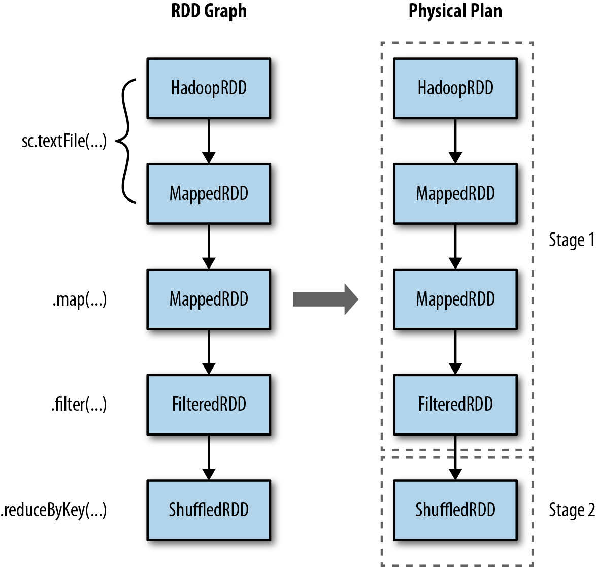
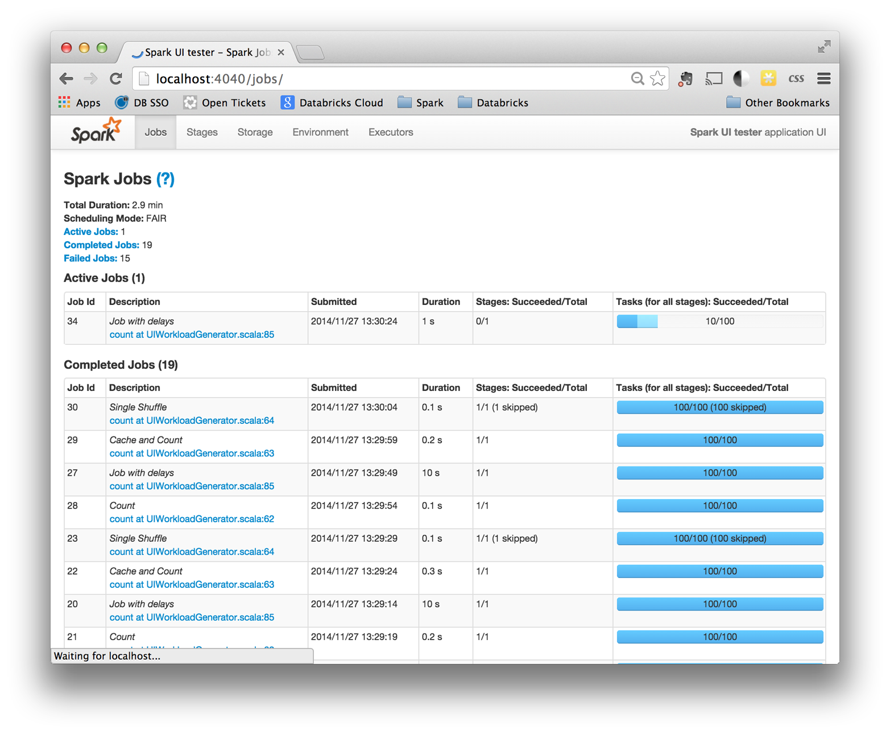
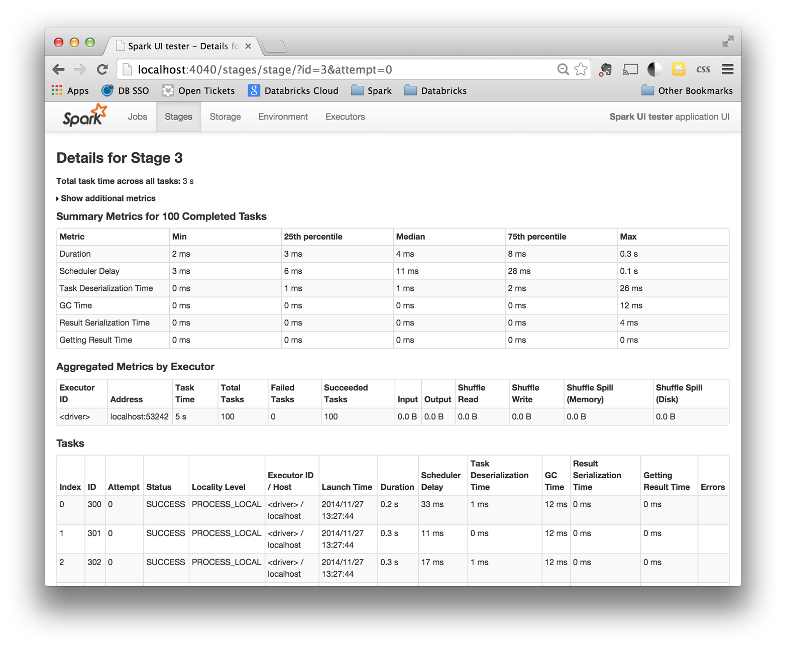
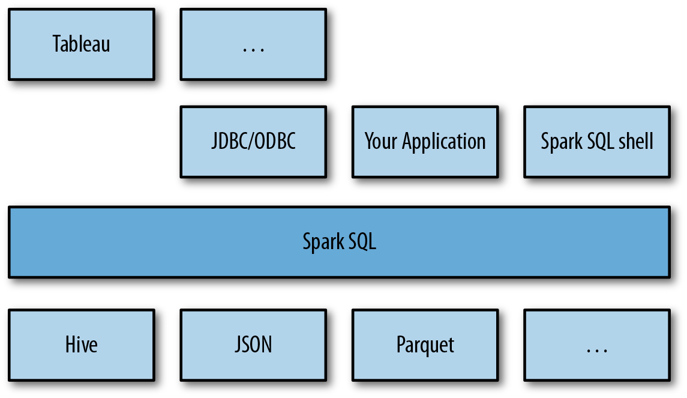

『 读书笔记 』Learning Spark [part 2]
2016-04-02
写在前面
这本书是在 2015.02 就出版的，那个时候 spark 应该还只是 1.1 左右，最近准备看一两本讲 spark 的高质量的书，算是梳理一下自己的思维。期间因为觉得这本书出版得太早，可能会缺少 spark 现在的很多 feature，所以选了另外一本在 gitbook 上开源的书。可是看了这本 learning spark 后，发现两本书还是有很大的差别。虽然必须承认这本书出版得较早，里面缺少了一些 spark 的新 feature，但是这完全不影响你学习 spark，掌握 spark 的里里外外。我比较推荐这本书作为 spark 初学者的入门书，而且这本书还是 spark 的作者 Matei 合著的，在很多问题的解释上会比其他人解释得更浅显易懂。
spark 的知识点很多，也很细碎，初学者需要通读几遍再加上亲身实践，才能把这些细小的知识点串起来，慢慢开始深入了解 spark，inside out。这篇读书笔记是我在读 learning spark 时候记录的书中的一些知识点，供以后 review 用，当然大家也可以参考参考。
书籍简介：
- 第一本介绍 spark 的书
- 由 spark 开发者写
- 完全 free，在 safaribook 上可以直接在线看：learning spark on safaribook
- 本书代码: code of learning spark on github
8. Tuning and Debugging Spark
Tuning and debugging spark is closely linked to configure spark, so let’s start with how to configure spark application.
8.1 Configuring Spark with SparkConf
- SparkConf Class
# Construct a conf
conf = new SparkConf()
conf.set("spark.app.name", "My Spark App")
conf.set("spark.master", "local[4]")
conf.set("spark.ui.port", "36000") # Override the default port
# Create a SparkContext with this configuration
sc = SparkContext(conf)- spark-submit command
The spark-submit tool provides built-in flags for the most common Spark configuration parameters and a generic –conf flag that accepts any Spark configuration value.
$ bin/spark-submit \
--class com.example.MyApp \
--master local[4] \
--name "My Spark App" \
--conf spark.ui.port=36000 \
myApp.jarspark-submit also supports loading configuration values from a file. This can be useful to set environmental configuration, which may be shared across multiple users, such as a default master. By default, spark-submit will look for a file called conf/spark-defaults.conf in the Spark directory and attempt to read whitespace-delimited key/value pairs from this file. You can also customize the exact location of the file using the –properties-file flag to spark-submit
$ bin/spark-submit \
--class com.example.MyApp \
--properties-file my-config.conf \
myApp.jar
## Contents of my-config.conf ##
spark.master local[4]
spark.app.name "My Spark App"
spark.ui.port 36000In some cases, the same configuration property might be set in multiple places. In these cases Spark has a specific precedence order:
SparkConf object > spark-submit paramters > values in the properties file > default values
Almost all Spark configurations occur through the SparkConf construct, but one important option doesn’t. To set the local storage directories for Spark to use for shuffle data (necessary for standalone and Mesos modes), you export the SPARK_LOCAL_DIRS environment variable inside of conf/spark-env.sh to a comma-separated list of storage locations. SPARK_LOCAL_DIRS is described in detail in “Hardware Provisioning”. This is specified differently from other Spark configurations because its value may be different on different physical hosts.
8.2 Components of Execution: Jobs, Tasks, and Stages
A first step in tuning and debugging Spark is to have a deeper understanding of the system’s internal design. In previous chapters you saw the “logical” representation of RDDs and their partitions. When executing, Spark translates this logical representation into a physical execution plan by merging multiple operations into tasks.
sc.textFile("input.txt").map(lambda line : line.split(" ")) \
.filter(lambda words : words.size > 0) \
.map(lambda words : (words(0), 1)) \
.reduceByKey{ lambda a, b : a + b }.collect() Spark’s scheduler creates a physical execution plan to compute the RDDs needed for performing the action. Here when we call collect() on the RDD, every partition of the RDD must be materialized and then transferred to the driver program. Spark’s scheduler starts at the final RDD being computed (in this case, collects) and works backward to find what it must compute. It visits that RDD’s parents, its parents’ parents, and so on, recursively to develop a physical plan necessary to compute all ancestor RDDs. In the simplest case, the scheduler outputs a computation stage for each RDD in this graph where the stage has tasks for each partition in that RDD. Those stages are then executed in reverse order to compute the final required RDD.
In more complex cases, the physical set of stages will not be an exact 1:1 correspondence to the RDD graph. This can occur when the scheduler performs pipelining, or collapsing of multiple RDDs into a single stage. Pipelining occurs when RDDs can be computed from their parents without data movement. The lineage output shown in above example uses indentation levels to show where RDDs are going to be pipelined together into physical stages. RDDs that exist at the same level of indentation as their parents will be pipelined during physical execution.

In addition to pipelining, Spark’s internal scheduler may truncate the lineage of the RDD graph if an existing RDD has already been persisted in cluster memory or on disk. Spark can “short-circuit” in this case and just begin computing based on the persisted RDD. A second case in which this truncation can happen is when an RDD is already materialized as a side effect of an earlier shuffle, even if it was not explicitly persist()ed. This is an under-the-hood optimization that takes advantage of the fact that Spark shuffle outputs are written to disk, and exploits the fact that many times portions of the RDD graph are recomputed.
Once the stage graph is defined, tasks are created and dispatched to an internal scheduler, which varies depending on the deployment mode being used. Stages in the physical plan can depend on each other, based on the RDD lineage, so they will be executed in a specific order. For instance, a stage that outputs shuffle data must occur before one that relies on that data being present.
A physical stage will launch tasks that each do the same thing but on specific partitions of data. Each task internally performs the same steps:
- Fetching its input, either from data storage (if the RDD is an input RDD), an existing RDD (if the stage is based on already cached data), or shuffle outputs.
- Performing the operation necessary to compute RDD(s) that it represents. For instance, executing filter() or map() functions on the input data, or performing grouping or reduction.
- Writing output to a shuffle, to external storage, or back to the driver (if it is the final RDD of an action such as count()).
Most logging and instrumentation in Spark is expressed in terms of stages, tasks, and shuffles. Understanding how user code compiles down into the bits of physical execution is an advanced concept, but one that will help you immensely in tuning and debugging applications.
To summarize, the following phases occur during Spark execution:
User code defines a DAG (directed acyclic graph) of RDDs
Operations on RDDs create new RDDs that refer back to their parents, thereby creating a graph.
Actions force translation of the DAG to an execution plan
When you call an action on an RDD it must be computed. This requires computing its parent RDDs as well. Spark’s scheduler submits a job to compute all needed RDDs. That job will have one or more stages, which are parallel waves of computation composed of tasks. Each stage will correspond to one or more RDDs in the DAG. A single stage can correspond to multiple RDDs due to pipelining.
Tasks are scheduled and executed on a cluster
Stages are processed in order, with individual tasks launching to compute segments of the RDD. Once the final stage is finished in a job, the action is complete.
In a given Spark application, this entire sequence of steps may occur many times in a continuous fashion as new RDDs are created.
8.3 Finding Information
8.3.1 JOBS: PROGRESS AND METRICS OF STAGES, TASKS, AND MORE
One very useful piece of information on this page is the progress of running jobs, stages, and tasks. Within each stage, this page provides several metrics that you can use to better understand physical execution.

A common use for this page is to assess the performance of a job. A good first step is to look through the stages that make up a job and see whether some are particularly slow or vary significantly in response time across multiple runs of the same job. If you have an especially expensive stage, you can click through and better understand what user code the stage is associated with.
Once you’ve narrowed down a stage of interest, the stage page, shown bellow, can help isolate performance issues. In data-parallel systems such as Spark, a common source of performance issues is skew, which occurs when a small number of tasks take a very large amount of time compared to others. The stage page can help you identify skew by looking at the distribution of different metrics over all tasks. A good starting point is the runtime of the task; do a few tasks take much more time than others? If this is the case, you can dig deeper and see what is causing the tasks to be slow. Do a small number of tasks read or write much more data than others? Are tasks running on certain nodes very slow? These are useful first steps when you’re debugging a job.

In addition to looking at task skew, it can be helpful to identify how much time tasks are spending in each of the phases of the task lifecycle: reading, computing, and writing. If tasks spend very little time reading or writing data, but take a long time overall, it might be the case that the user code itself is expensive (for an example of user code optimizations, see “Working on a Per-Partition Basis”). Some tasks may spend almost all of their time reading data from an external storage system, and will not benefit much from additional optimization in Spark since they are bottlenecked on input read.
8.3.2 STORAGE: INFORMATION FOR RDDS THAT ARE PERSISTED
The storage page contains information about persisted RDDs. An RDD is persisted if someone called persist() on the RDD and it was later computed in some job. In some cases, if many RDDs are cached, older ones will fall out of memory to make space for newer ones. This page will tell you exactly what fraction of each RDD is cached and the quantity of data cached in various storage media (disk, memory, etc.). It can be helpful to scan this page and understand whether important datasets are fitting into memory or not.
- spark.memory.fraction 0.75(default)
which mean that only the 75% of the total memory set per executor is available for execution and storage. And remaining 25% is used by executors internally.
- spark.memory.storageFraction 0.5(default)
which means out of 75% only 50% is available for running the job and remaining 50% for storage.
refer to spark executor memory, just for cache or the runtime memory ? in spark mailing-list.
8.3.3 EXECUTORS: A LIST OF EXECUTORS PRESENT IN THE APPLICATION
This page lists the active executors in the application along with some metrics around the processing and storage on each executor. One valuable use of this page is to confirm that your application has the amount of resources you were expecting. A good first step when debugging issues is to scan this page, since a misconfiguration resulting in fewer executors than expected can, for obvious reasons, affect performance. It can also be useful to look for executors with anomalous behaviors, such as a very large ratio of failed to successful tasks. An executor with a high failure rate could indicate a misconfiguration or failure on the physical host in question. Simply removing that host from the cluster can improve performance.
Another feature in the executors page is the ability to collect a stack trace from executors using the Thread Dump button (this feature was introduced in Spark 1.2). Visualizing the thread call stack of an executor can show exactly what code is executing at an instant in time. If an executor is sampled several times in a short time period with this feature, you can identify “hot spots,” or expensive sections, in user code. This type of informal profiling can often detect inefficiencies in user code.
8.3.4 ENVIRONMENT: DEBUGGING SPARK’S CONFIGURATION
This page enumerates the set of active properties in the environment of your Spark application. The configuration here represents the “ground truth” of your application’s configuration. It can be helpful if you are debugging which configuration flags are enabled, especially if you are using multiple configuration mechanisms. This page will also enumerate JARs and files you’ve added to your application, which can be useful when you’re tracking down issues such as missing dependencies.
8.3.5 Driver and Executor Logs
The exact location of Spark’s logfiles depends on the deployment mode:
- In Spark’s Standalone mode, application logs are directly displayed in the standalone master’s web UI. They are stored by default in the work/ directory of the Spark distribution on each worker.
By default Spark outputs a healthy amount of logging information. It is also possible to customize the logging behavior to change the logging level or log output to non-standard locations. Spark’s logging subsystem is based on log4j, a widely used Java logging library, and uses log4j’s configuration format. An example log4j configuration file is bundled with Spark at conf/log4j.properties.template. To customize Spark’s logging, first copy the example to a file called log4j.properties. You can then modify behavior such as the root logging level (the threshold level for logging output). By default, it is INFO. For less log output, it can be set to WARN or ERROR. Once you’ve tweaked the logging to match your desired level or format, you can add the log4j.properties file using the –files flag of spark-submit. If you have trouble setting the log level in this way, make sure that you are not including any JARs that themselves contain log4j.properties files with your application. Log4j works by scanning the classpath for the first properties file it finds, and will ignore your customization if it finds properties somewhere else first.
8.4 Key Performance Considerations
8.4.1 Level of Parallelism
The logical representation of an RDD is a single collection of objects. During physical execution, as discussed already a few times in this book, an RDD is divided into a set of partitions with each partition containing some subset of the total data. When Spark schedules and runs tasks, it creates a single task for data stored in one partition, and that task will require, by default, a single core in the cluster to execute. Out of the box, Spark will infer what it thinks is a good degree of parallelism for RDDs, and this is sufficient for many use cases. Input RDDs typically choose parallelism based on the underlying storage systems. For example, HDFS input RDDs have one partition for each block of the underlying HDFS file. RDDs that are derived from shuffling other RDDs will have parallelism set based on the size of their parent RDDs.
The degree of parallelism can affect performance in two ways.
- First, if there is too little parallelism, Spark might leave resources idle. For example, if your application has 1,000 cores allocated to it, and you are running a stage with only 30 tasks, you might be able to increase the level of parallelism to utilize more cores.
- If there is too much parallelism, small overheads associated with each partition can add up and become significant. A sign of this is that you have tasks that complete almost instantly—in a few milliseconds—or tasks that do not read or write any data.
Spark offers two ways to tune the degree of parallelism for operations:
- The first is that, during operations that shuffle data, you can always give a degree of parallelism for the produced RDD as a parameter.
- The second is that any existing RDD can be redistributed to have more or fewer partitions. The repartition() operator will randomly shuffle an RDD into the desired number of partitions. If you know you are shrinking the RDD, you can use the coalesce() operator; this is more efficient than repartition() since it avoids a shuffle operation. If you think you have too much or too little parallelism, it can help to redistribute your data with these operators.
As an example, let’s say we are reading a large amount of data from S3, but then immediately performing a filter() operation that is likely to exclude all but a tiny fraction of the dataset. By default the RDD returned by filter() will have the same size as its parent and might have many empty or small partitions. In this case you can improve the application’s performance by coalescing down to a smaller RDD, as shown bellow:
### version 1
# Wildcard input that may match thousands of files
sc.textFile("s3n://log-files/2014/*.log") \
.getNumPartitions()
# A filter that excludes almost all data
sc.textFile("s3n://log-files/2014/*.log") \
.filter(lambda line: line.startswith("2014-10-17")) \
.getNumPartitions()
### version 2
# We coalesce the lines RDD before caching
sc.textFile("s3n://log-files/2014/*.log") \
.coalesce(5).cache() \
.filter(lambda line: line.startswith("2014-10-17")) \
.getNumPartitions()8.4.2 Serialization Format
When Spark is transferring data over the network or spilling data to disk, it needs to serialize objects into a binary format. This comes into play during shuffle operations, where potentially large amounts of data are transferred. By default Spark will use Java’s built-in serializer. Spark also supports the use of Kryo, a third-party serialization library that improves on Java’s serialization by offering both faster serialization times and a more compact binary representation, but cannot serialize all types of objects “out of the box.” Almost all applications will benefit from shifting to Kryo for serialization.
To use Kryo serialization, you can set the spark.serializer setting to org.apache.spark.serializer.KryoSerializer. For best performance, you’ll also want to register classes with Kryo that you plan to serialize. Registering a class allows Kryo to avoid writing full class names with individual objects, a space savings that can add up over thousands or millions of serialized records. If you want to force this type of registration, you can set spark.kryo.registrationRequired to true, and Kryo will throw errors if it encounters an unregistered class.
val conf = new SparkConf()
conf.set("spark.serializer", "org.apache.spark.serializer.KryoSerializer")
// Be strict about class registration
conf.set("spark.kryo.registrationRequired", "true")
conf.registerKryoClasses(Array(classOf[MyClass], classOf[MyOtherClass]))8.4.3 Memory Management
Spark uses memory in different ways, so understanding and tuning Spark’s use of memory can help optimize your application. Inside of each executor, memory is used for a few purposes:
- RDD storage
When you call persist() or cache() on an RDD, its partitions will be stored in memory buffers. Spark will limit the amount of memory used when caching to a certain fraction of the JVM’s overall heap, set by spark.storage.memoryFraction. If this limit is exceeded, older partitions will be dropped from memory.
- Shuffle and aggregation buffers
When performing shuffle operations, Spark will create intermediate buffers for storing shuffle output data. These buffers are used to store intermediate results of aggregations in addition to buffering data that is going to be directly output as part of the shuffle. Spark will attempt to limit the total amount of memory used in shuffle-related buffers to spark.shuffle.memoryFraction.
- User code
Spark executes arbitrary user code, so user functions can themselves require substantial memory. For instance, if a user application allocates large arrays or other objects, these will contend for overall memory usage. User code has access to everything left in the JVM heap after the space for RDD storage and shuffle storage are allocated.
In addition to tweaking memory regions, you can improve certain elements of Spark’s default caching behavior for some workloads. Spark’s default cache() operation persists memory using the MEMORY_ONLY storage level. This means that if there is not enough space to cache new RDD partitions, old ones will simply be deleted and, if they are needed again, they will be recomputed. It is sometimes better to call persist() with the MEMORY_AND_DISK storage level, which instead drops RDD partitions to disk and simply reads them back to memory from a local store if they are needed again. This can be much cheaper than recomputing blocks and can lead to more predictable performance. This is particularly useful if your RDD partitions are very expensive to recompute (for instance, if you are reading data from a database). The full list of possible storage levels is given in Table 3-6.
A second improvement on the default caching policy is to cache serialized objects instead of raw Java objects, which you can accomplish using the MEMORY_ONLY_SER or MEMORY_AND_DISK_SER storage levels. Caching serialized objects will slightly slow down the cache operation due to the cost of serializing objects, but it can substantially reduce time spent on garbage collection in the JVM, since many individual records can be stored as a single serialized buffer. This is because the cost of garbage collection scales with the number of objects on the heap, not the number of bytes of data, and this caching method will take many objects and serialize them into a single giant buffer. Consider this option if you are caching large amounts of data (e.g., gigabytes) as objects and/or seeing long garbage collection pauses. Such pauses would be visible in the application UI under the GC Time column for each task.
8.4.4 Hardware Provisioning
The hardware resources you give to Spark will have a significant effect on the completion time of your application. The main parameters that affect cluster sizing are the amount of memory given to each executor, the number of cores for each executor, the total number of executors, and the number of local disks to use for scratch data.
In all deployment modes, executor memory is set with spark.executor.memory or the –executor-memory flag to spark-submit. The options for number and cores of executors differ depending on deployment mode. In YARN you can set spark.executor.cores or the –executor-cores flag and the –num-executors flag to determine the total count. In Mesos and Standalone mode, Spark will greedily acquire as many cores and executors as are offered by the scheduler. However, both Mesos and Standalone mode support setting spark.cores.max to limit the total number of cores across all executors for an application. Local disks are used for scratch storage during shuffle operations.
Broadly speaking, Spark applications will benefit from having more memory and cores. Spark’s architecture allows for linear scaling; adding twice the resources will often make your application run twice as fast. An additional consideration when sizing a Spark application is whether you plan to cache intermediate datasets as part of your workload. If you do plan to use caching, the more of your cached data can fit in memory, the better the performance will be. The Spark storage UI will give details about what fraction of your cached data is in memory. One approach is to start by caching a subset of your data on a smaller cluster and extrapolate the total memory you will need to fit larger amounts of the data in memory.
In addition to memory and cores, Spark uses local disk volumes to store intermediate data required during shuffle operations along with RDD partitions that are spilled to disk. Using a larger number of local disks can help accelerate the performance of Spark applications. In YARN mode, the configuration for local disks is read directly from YARN, which provides its own mechanism for specifying scratch storage directories. In Standalone mode, you can set the SPARK_LOCAL_DIRS environment variable in spark-env.sh when deploying the Standalone cluster and Spark applications will inherit this config when they are launched. In Mesos mode, or if you are running in another mode and want to override the cluster’s default storage locations, you can set the spark.local.dir option. In all cases you specify the local directories using a single comma-separated list. It is common to have one local directory for each disk volume available to Spark. Writes will be evenly striped across all local directories provided. Larger numbers of disks will provide higher overall throughput.
One caveat to the “more is better” guideline is when sizing memory for executors. Using very large heap sizes can cause garbage collection pauses to hurt the throughput of a Spark job. It can sometimes be beneficial to request smaller executors (say, 64 GB or less) to mitigate this issue. Mesos and YARN can, out of the box, support packing multiple, smaller executors onto the same physical host, so requesting smaller executors doesn’t mean your application will have fewer overall resources. In Spark’s Standalone mode, you need to launch multiple workers (determined using SPARK_WORKER_INSTANCES) for a single application to run more than one executor on a host. This limitation will likely be removed in a later version of Spark. In addition to using smaller executors, storing data in serialized form (see “Memory Management”) can also help alleviate garbage collection.
To dive deeper into tuning Spark, visit the tuning guide in the official documentation.
9. Spark SQL
Spark SQL provides three main capabilities:
- It can load data from a variety of structured sources (e.g., JSON, Hive, and Parquet).
- It lets you query the data using SQL, both inside a Spark program and from external tools that connect to Spark SQL through standard database connectors (JDBC/ODBC), such as business intelligence tools like Tableau.
- When used within a Spark program, Spark SQL provides rich integration between SQL and regular Python/Java/Scala code, including the ability to join RDDs and SQL tables, expose custom functions in SQL, and more. Many jobs are easier to write using this combination.
Spark SQL provides a special type of RDD called SchemaRDD. A SchemaRDD is an RDD of Row objects, each representing a record. While SchemaRDDs look like regular RDDs, internally they store data in a more efficient manner, taking advantage of their schema. In addition, they provide new operations not available on RDDs, such as the ability to run SQL queries. SchemaRDDs can be created from external data sources, from the results of queries, or from regular RDDs.

9.1 Linking with Spark SQL
9.2 Using Spark SQL in Applications
9.2.1 SchemaRDDs [Will be DataFrame in future]
Both loading data and executing queries return SchemaRDDs. SchemaRDDs are similar to tables in a traditional database. Under the hood, a SchemaRDD is an RDD composed of Row objects with additional schema information of the types in each column. Row objects are just wrappers around arrays of basic types (e.g., integers and strings).
SchemaRDDs are also regular RDDs, so you can operate on them using existing RDD transformations like map() and filter(). However, they provide several additional capabilities. Most importantly, you can register any SchemaRDD as a temporary table to query it via HiveContext.sql or SQLContext.sql. You do so using the SchemaRDD’s registerTempTable() method.
9.2.2 WORKING WITH ROW OBJECTS
Row objects represent records inside SchemaRDDs, and are simply fixed-length arrays of fields.
9.2.3 Caching
Caching in Spark SQL works a bit differently. Since we know the types of each column, Spark is able to more efficiently store the data. To make sure that we cache using the memory efficient representation, rather than the full objects, we should use the special hiveCtx.cacheTable(“tableName”) method. When caching a table Spark SQL represents the data in an in-memory columnar format. This cached table will remain in memory only for the life of our driver program, so if it exits we will need to recache our data. As with RDDs, we cache tables when we expect to run multiple tasks or queries against the same data.
In Spark 1.2, the regular cache() method on RDDs also results in a cacheTable().
9.3 Loading and Saving Data
9.4 JDBC/ODBC Server
Spark SQL also provides JDBC connectivity, which is useful for connecting business intelligence (BI) tools to a Spark cluster and for sharing a cluster across multiple users. The JDBC server runs as a standalone Spark driver program that can be shared by multiple clients. Any client can cache tables in memory, query them, and so on, and the cluster resources and cached data will be shared among all of them.
Spark SQL’s JDBC server corresponds to the HiveServer2 in Hive. It is also known as the “Thrift server” since it uses the Thrift communication protocol. Note that the JDBC server requires Spark be built with Hive support.
The server can be launched with sbin/start-thriftserver.sh in your Spark directory. This script takes many of the same options as spark-submit. By default it listens on localhost:10000, but we can change these with either environment variables (HIVE_SERVER2_THRIFT_PORT and HIVE_SERVER2_THRIFT_BIND_HOST), or with Hive configuration properties (hive.server2.thrift.port and hive.server2.thrift.bind.host). You can also specify Hive properties on the command line with –hiveconf property=value
Many external tools can also connect to Spark SQL via its ODBC driver. The Spark SQL ODBC driver is produced by Simba and can be downloaded from various Spark vendors (e.g., Databricks Cloud, Datastax, and MapR). It is commonly used by business intelligence (BI) tools such as Microstrategy or Tableau; check with your tool about how it can connect to Spark SQL. In addition, most BI tools that have connectors to Hive can also connect to Spark SQL using their existing Hive connector, because it uses the same query language and server.
One of the advantages of using Spark SQL’s JDBC server is we can share cached tables between multiple programs. This is possible since the JDBC Thrift server is a single driver program. To do this, you only need to register the table and then run the CACHE command on it.
9.5 User-Defined Functions
User-defined functions, or UDFs, allow you to register custom functions in Python, Java, and Scala to call within SQL. Spark SQL makes it especially easy to write UDFs. It supports both its own UDF interface and existing Apache Hive UDFs.
9.5.1 Spark SQL UDFs
Spark SQL offers a built-in method to easily register UDFs by passing in a function in your programming language. In Scala and Python, we can use the native function and lambda syntax of the language, and in Java we need only extend the appropriate UDF class. Our UDFs can work on a variety of types, and we can return a different type than the one we are called with.
In Python and Java we also need to specify the return type using one of the SchemaRDD types. In Java these types are found in org.apache.spark.sql.api.java.DataType and in Python we import the DataType.
# Make a UDF to tell us how long some text is
hiveCtx.registerFunction("strLenPython", lambda x: len(x), IntegerType())
lengthSchemaRDD = hiveCtx.sql("SELECT strLenPython('text') FROM tweets LIMIT 10")9.6 Spark SQL Performance
Spark SQL is for more than just users who are familiar with SQL. Spark SQL makes it very easy to perform conditional aggregate operations, like counting the sum of multiple columns, without having to construct special objects.
Spark SQL is able to use the knowledge of types to more efficiently represent our data. When caching data, Spark SQL uses an in-memory columnar storage. This not only takes up less space when cached, but if our subsequent queries depend only on subsets of the data, Spark SQL minimizes the data read.
Predicate push-down allows Spark SQL to move some parts of our query “down” to the engine we are querying. If we wanted to read only certain records in Spark, the standard way to handle this would be to read in the entire dataset and then execute a filter on it. However, in Spark SQL, if the underlying data store supports retrieving only subsets of the key range, or another restriction, Spark SQL is able to push the restrictions in our query down to the data store, resulting in potentially much less data being read.